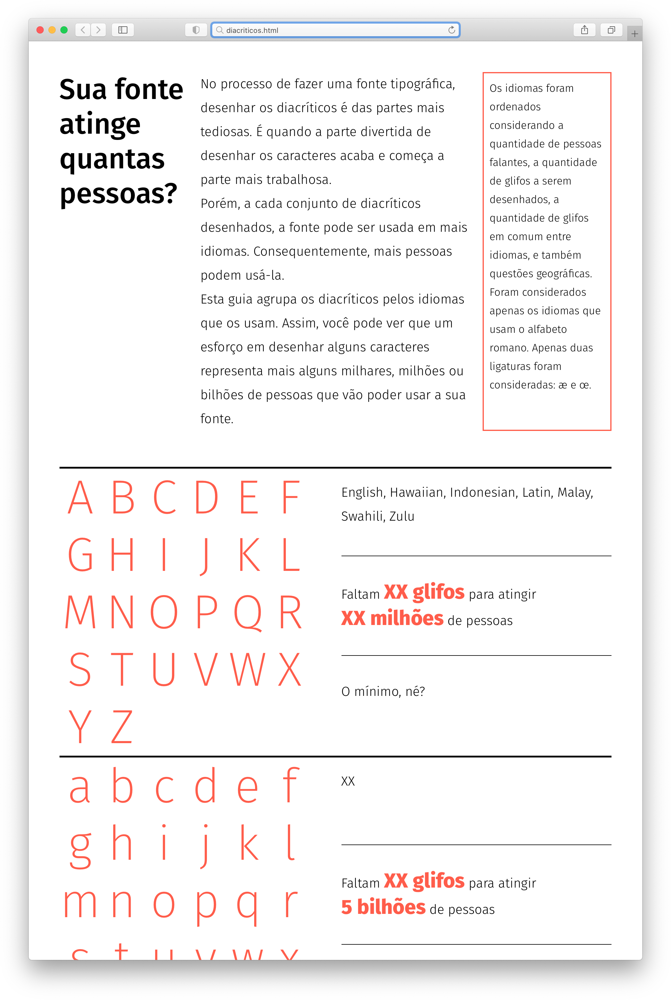

Quantas pessoas a sua fonte alcança?
Há várias famílias tipográficas disponíveis gratuitamente que não têm vários glifos necessários a vários idiomas, como acentos, ligaturas específicas e outros diacríticos. Pensei que uma maneira de estimular tipógrafos amadores a finalizar suas fontes seria colocar esse trabalho em perspectiva, mostrando quantas pessoas passam a poder usar a fonte.
Pensado inicialmente como um pôster, o trabalho depois se transformou em um projeto interativo, mostrando quantos glifos faltam ser desenhados para alcançar os falantes de cada idioma. Isso faz do projeto uma ferramenta para controlar o desenho de uma fonte, apresenta informações relevantes sobre cada idioma, e acrescenta um elemento de gameficação para estimular a produção de fontes que possam ser usadas por mais pessoas.
Ainda está em desenvolvimento. Faltam refinamentos tipográficos, checar informações e curiosidades, e programar os cálculos, provavelmente usando Javascript e/ou React.
